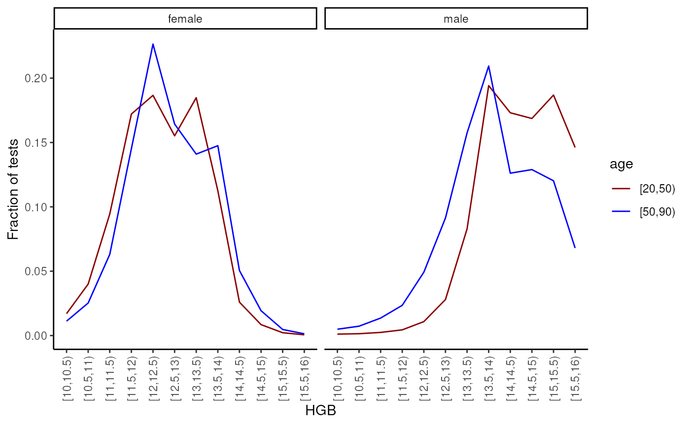
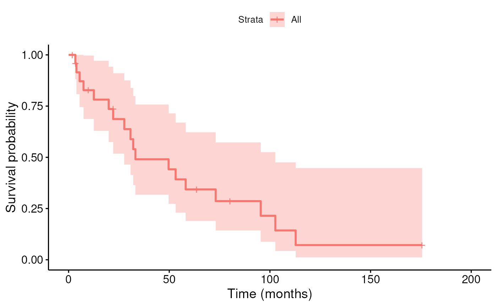
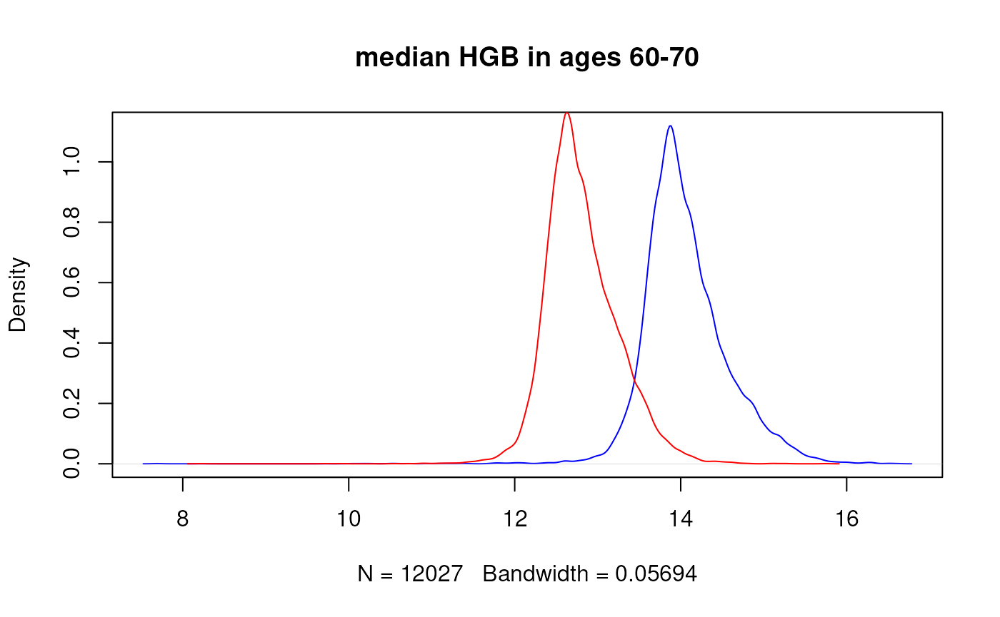
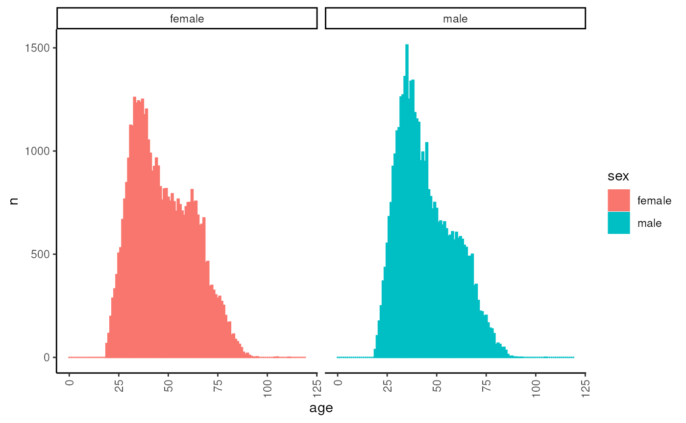

library(naryn)
#>
#> Attaching package: 'naryn'
#> The following object is masked from 'package:base':
#>
#> months
library(dplyr)
#>
#> Attaching package: 'dplyr'
#> The following objects are masked from 'package:stats':
#>
#> filter, lag
#> The following objects are masked from 'package:base':
#>
#> intersect, setdiff, setequal, union
library(ggplot2)
theme_set(theme_classic())Naryn is an implementation of a time-series database, for efficient storage, retrieval and analysis of electronic health records (EHR).
Towards this vignette we are going to use a small database which was simulated to include an example of a typical EMR database. It can be downloaded from here or using the following code:
Note that although smaller than the real database, this example database is still quite large (~1.2GB) and will take a few minutes to download.
The basic element of Naryn is a track - a single numerical data element (e.g. RBC lab test result) that is recorded for many patients at various time points. A track can be thought of as a very sparse two-dimensional matrix with a row for each patient in the database, and a column for each timepoint in the resolution of hours. Another way to think of a track is as a table with triplets of patient, timepoint and value:
| id | time | lab.RBC |
|---|---|---|
| 1 | 1218708 | 4.784053 |
| 1 | 1223571 | 4.534783 |
| 1 | 1227064 | 4.114022 |
| 2 | 1230857 | 4.588766 |
| 2 | 1272632 | 4.507858 |
| 3 | 1218461 | 4.620333 |
| 3 | 1242600 | 5.412831 |
| 3 | 1246149 | 5.555339 |
The value can be any numerical value, but it is usually a lab test result, or categorical variable representing a diagnosis. The time is a number representing the number of hours since 1/3/1867 00:00, and the id is a unique identifier for each patient which is defined in a special track called ‘patients.dob’, which contains the time of birth for each patient (see below).
For more information on tracks, see the ‘Tracks’ section in the advanced vignette.
A naryn database is a folder containing a number of tracks. To connect to a database, use the emr_db.connect function:
emr_db.connect("sample_db")Now we can use emr_track.ls to list all the tracks in the database:
head(emr_track.ls())
#> [1] "dx.icd9_000" "dx.icd9_001" "dx.icd9_002" "dx.icd9_003" "dx.icd9_004"
#> [6] "dx.icd9_005"
# show number of available tracks in database
length(emr_track.ls())
#> [1] 2995We can also use emr_track.ls to list all the tracks that match a certain pattern:
emr_track.ls("RBC")
#> [1] "lab.RBC" "lab.RBC.URIN"Note: Naryn supports connecting to multiple databases at the same time, by giving a vector of paths to
emr_db.connect, see more in the ‘Database’ section of the advanced vignette.
We can now go back to the ‘RBC’ example and extract the data from the track. This can be done using the emr_extract() function which is the ‘Swiss army knife’ of the package. It can be used to extract data from a single track, or from multiple tracks, while applying various filters and transformations, but we will start with the simplest example of extracting the data from a single track:
rbc_df <- emr_extract("lab.RBC")
head(rbc_df)
#> id time ref lab.RBC
#> 1 1 1218708 -1 4.784053
#> 2 1 1223571 -1 4.534783
#> 3 1 1227064 -1 4.114022
#> 4 1 1227864 -1 4.002392
#> 5 1 1232022 -1 4.384029
#> 6 1 1234887 -1 5.053118We can see that the data is returned as a data frame with four columns: id, time, ref and value. The id column contains the patient id, the time column contains the time of the measurement in hours since 1/3/1867 00:00, and the value column contains the Red Blood Cell count of the patient at each timepoint. For information regarding the ref column, see the ‘Records and References’ section in the advanced vignette.
The data frame is sorted by id and time, so that the data for each patient is consecutive.
The first argument of emr_extract was, in the example above, a string representing the name of the track. However, it can also be a track expression, which is a string that can contain functions that will be applied to the track after extracting the data. For example, we can extract the lab value multiplied by two:
rbc_df <- emr_extract("lab.RBC * 2")
head(rbc_df)
#> id time ref lab.RBC * 2
#> 1 1 1218708 -1 9.568107
#> 2 1 1223571 -1 9.069567
#> 3 1 1227064 -1 8.228045
#> 4 1 1227864 -1 8.004785
#> 5 1 1232022 -1 8.768059
#> 6 1 1234887 -1 10.106236Note that the functions applied to the track in the track expression should be functions that can be applied to a vector of values, and should return a vector of the same length.
We can transform the time to year, month day and hour using the emr_time2date() function:
rbc_df %>%
mutate(emr_time2date(time)) %>%
head()
#> id time ref lab.RBC * 2 year month day hour
#> 1 1 1218708 -1 9.568107 2006 3 11 12
#> 2 1 1223571 -1 9.069567 2006 9 30 3
#> 3 1 1227064 -1 8.228045 2007 2 22 16
#> 4 1 1227864 -1 8.004785 2007 3 28 0
#> 5 1 1232022 -1 8.768059 2007 9 17 6
#> 6 1 1234887 -1 10.106236 2008 1 14 15In the previous example we extracted the data from a single track, what happens if we want to extract data from multiple tracks at once? For example, we would want to extract the RBC and WBC (White Blood cell Count) of patients which had a heart disease (ICD9 code 411), 5 years before their diagnosis. In order to achieve this we need to introduce the concept of iterators.
An iterator is a set of points in the patient-time space1 that defines the way in which naryn traverses the database. In the RBC example, the iterator was simply the set of all patient-time points that were included in the track, but now - we would want our point-of-view to be the heart disease diagnosis so we would set the iterator to the track of ICD code 411:
heart_blood <- emr_extract(c("lab.RBC", "lab.WBC"), iterator = "dx.icd9_411")
head(heart_blood)
#> id time ref lab.RBC lab.WBC
#> 1 1 1220308 -1 NaN NaN
#> 2 1 1220947 -1 NaN NaN
#> 3 1 1241362 -1 NaN NaN
#> 4 4 1280579 -1 NaN NaN
#> 5 4 1329136 -1 NaN NaN
#> 6 4 1335742 -1 NaN NaN
nrow(na.omit(heart_blood))
#> [1] 19We can see that the “lab.RBC” and “lab.WBC” are all NA. This is because the iterator is set to the “dx.icd9_411” diagnosis, and the RBC and WBC tests were not performed at the exact time the diagnosis was recorded. In order to get the RBC test that was done 5 years prior to the diagnosis, we would have to:
This can be done using a virtual track. A virtual track is a way to tell naryn how to compute the value of a track when at a specific point in the patient-time space. It is created using the emr_virtual_track() function, which tells naryn how to shift the time for a given track (1, time.shift) and which function to apply to the values of the track (2, func). Note that the time shift is always in reference to the iterator. So for example, in our case we would like to look at an RBC / WBC measurement 5 years before the diagnosis. If our iterator is at the time of heart disease diagnosis, we want to look at a time window that starts 5 years before and ends at the time of diagnosis:
emr_vtrack.create("rbc_5y", "lab.RBC", time.shift = c(-years(5), 0), func = "earliest")
emr_vtrack.create("wbc_5y", "lab.WBC", time.shift = c(-years(5), 0), func = "earliest")Now, we can extract the data from the virtual tracks (instead of the tracks themselves):
heart_blood <- emr_extract(c("rbc_5y", "wbc_5y"), iterator = "dx.icd9_411", names = c("RBC", "WBC"))
head(heart_blood)
#> id time ref RBC WBC
#> 1 1 1220308 -1 4.784053 8.008108
#> 2 1 1220947 -1 4.784053 8.008108
#> 3 1 1241362 -1 4.784053 8.008108
#> 4 4 1280579 -1 4.617556 5.105508
#> 5 4 1329136 -1 4.421784 6.366830
#> 6 4 1335742 -1 4.619302 5.197200We would like to also know how long before the diagnosis each test was performed, so we will create an additional virtual track, this time with a function that computes the difference between the time of the diagnosis and the earliest blood test. Also, we would like the time difference to be in the resolution of months, so we will give emr_extract a track expression that divides the time difference by 30 * 24 (the number of hours in a month), which is equivalent to the month function:
emr_vtrack.create("rbc_5y_d", "lab.RBC", time.shift = c(-years(5), 0), func = "dt2.earliest")
emr_vtrack.create("wbc_5y_d", "lab.WBC", time.shift = c(-years(5), 0), func = "dt2.earliest")
heart_blood <- emr_extract(
c("rbc_5y", "wbc_5y", "rbc_5y_d/month()", "wbc_5y_d/month()"),
iterator = "dx.icd9_411",
names = c("RBC", "WBC", "RBC_d", "WBC_d")
)
head(heart_blood)
#> id time ref RBC WBC RBC_d WBC_d
#> 1 1 1220308 -1 4.784053 8.008108 2.222222 2.222222
#> 2 1 1220947 -1 4.784053 8.008108 3.109722 3.109722
#> 3 1 1241362 -1 4.784053 8.008108 31.463889 31.463889
#> 4 4 1280579 -1 4.617556 5.105508 57.434722 57.434722
#> 5 4 1329136 -1 4.421784 6.366830 59.809722 59.809722
#> 6 4 1335742 -1 4.619302 5.197200 52.718056 52.718056Yay! we got what we wanted, but something is still weird - we can see that some patients (and in this sampled database - most patients) have more than one diagnosis of a heart disease. Many times, this is indeed the case - a patient can be diagnosed with heart disease multiple times, but more commonly in EMR data - the same diagnosis is recorded multiple times, and what we actually want is the earliest diagnosis. In order to achieve that we would have to use filters.
A filter is a logical condition that is applied to the iterator in order to decide which points to include and which to exclude. In our case we want to include only the earliest diagnosis of heart disease, so we would use the emr_filter.create function to create a filter that would exclude all points that had a diagnosis of heart disease prior to the current point:
emr_filter.create("heart_disease_in_past", "dx.icd9_411", time.shift = c(-years(120), -1))We will now apply the filter to our query:
heart_blood <- emr_extract(
c("rbc_5y", "wbc_5y", "rbc_5y_d/month()", "wbc_5y_d/month()"),
iterator = "dx.icd9_411",
names = c("RBC", "WBC", "RBC_d", "WBC_d"),
filter = "!heart_disease_in_past"
)
head(heart_blood)
#> id time ref RBC WBC RBC_d WBC_d
#> 1 1 1220308 -1 4.784053 8.008108 2.222222 2.222222
#> 2 4 1280579 -1 4.617556 5.105508 57.434722 57.434722
#> 3 5 1306345 -1 6.196034 9.277723 57.438889 57.438889
#> 4 6 1259009 -1 4.271791 7.004467 43.415278 43.415278
#> 5 19 1322741 -1 4.385486 7.695645 53.869444 53.869444
#> 6 22 1227666 -1 3.858857 4.801625 13.520833 13.520833Voila! every patient now has only the earliest diagnosis of heart disease.
Filters can not only be used to exclude or include points by the mere existence of a point in the patient-time space (like the previous example), but also by the value of the point. For example, we can create a filter that would include only points where the RBC was abnormal (say, above 6):
emr_filter.create("abnormal_rbc", "rbc_5y", val = 6, operator = ">")
heart_blood_abnormal_rbc <- emr_extract(
c("rbc_5y", "wbc_5y"),
iterator = "dx.icd9_411",
filter = "!heart_disease_in_past & abnormal_rbc",
names = c("RBC", "WBC")
)
head(heart_blood_abnormal_rbc)
#> id time ref RBC WBC
#> 1 5 1306345 -1 6.196034 9.277723
#> 2 2230 1320077 -1 7.511171 7.800000
#> 3 3312 1276025 -1 6.453111 11.903167
#> 4 3432 1332812 -1 6.169343 7.750395
#> 5 3529 1269751 -1 6.435419 8.229447
#> 6 4326 1234490 -1 6.006401 9.864933Another example is to include or exclude based on the value of a categorical track. For example, in order to include only patients that were diagnosed with Postmyocardial infarction syndrome (ICD9 code 411.0) we filter “dx.icd9_411” to include only points with value of “10” (see note below):
emr_filter.create("postmyocardial_infarction", "dx.icd9_411", val = 10)
postmyo_blood <- emr_extract(
c("rbc_5y", "wbc_5y", "dx.icd9_411"),
iterator = "dx.icd9_411",
filter = "!heart_disease_in_past & postmyocardial_infarction",
names = c("RBC", "WBC", "icd9_411")
)
head(postmyo_blood)
#> id time ref RBC WBC icd9_411
#> 1 252 1243750 -1 4.303543 5.099193 10
#> 2 1537 1277787 -1 4.400787 5.095808 10
#> 3 3226 1280679 -1 4.061680 4.804326 10
#> 4 3320 1349528 -1 4.672515 5.503540 10
#> 5 3407 1263521 -1 5.311868 10.404092 10
#> 6 3529 1269751 -1 6.435419 8.229447 10NOTE: since ICD9 diagnosis codes have a tree like structure, and X.0, X.00 are both valid codes and must be distinguishable, the diagnosis tracks all include a prefix of 1 for the minor code, so X.0 will be translated to icd9_X and a value of 10 will be stored instead of 0.
As noted above, all patients must be listed in a track called ‘patients.dob’. This track contains for each patient a single time point at the time of birth. In this mock database, the value per patient reflect their sex: 1 for male, 2 for female:
patients <- emr_extract("patients.dob", names = "sex")
head(patients)
#> id time ref sex
#> 1 1 535998 -1 1
#> 2 2 1024040 -1 2
#> 3 3 807917 -1 1
#> 4 4 864871 -1 1
#> 5 5 826123 -1 1
#> 6 6 817547 -1 2
patients %>%
count(sex) %>%
mutate(sex = c("male", "female")[sex])
#> sex n
#> 1 male 48621
#> 2 female 51379Given what we learned about iterators, virtual tracks and filters, how would we extract the age of a patient at a given timepoint? For example, say that we want to know the age of a patient at the time of their first diagnosis of heart disease. We can do this by creating a virtual track that computes the difference between the time of the diagnosis and the time of birth.
A virtual track needs 4 things - name, source, time shift and function. We should set the name to “age”, the source to “patients.dob” and at each point of the iterator we would like to go backward in time a maximal amount (say - 120 years) and compute the time difference between the point and the birth, so we will set the time.shift to c(-years(120), 0) and the function to dt2.earliest:
emr_vtrack.create("age", "patients.dob", time.shift = c(-years(120), 0), func = "dt2.earliest")We can now extract the age of the patient at the time of their first diagnosis of heart disease in the resolution of years:
age_at_heart_diag <- emr_extract("age/year()", iterator = "dx.icd9_411", name = "age")
head(age_at_heart_diag)
#> id time ref age
#> 1 1 1220308 -1 78.11758
#> 2 1 1220947 -1 78.19053
#> 3 1 1241362 -1 80.52100
#> 4 4 1280579 -1 47.45525
#> 5 4 1329136 -1 52.99829
#> 6 4 1335742 -1 53.75240Sex can be defined in a similar way going backward in time and taking the earliest value at the “patients.dob” track:
emr_vtrack.create("sex", "patients.dob", time.shift = c(-years(120), 0), func = "earliest")Assume that patients.dod is a track with a single entry (at most) for each patient in the EHR database at time of death. Define a virtual track that computes the time until death for each patient in the current iterator timepoint:
emr_vtrack.create("survival", "patients.dod", time.shift = c(0, 120 * 365 * 24), func = "dt1.earliest")Until now we learned how to use filters to exclude or include datapoints by their value or existence, but what if we want to include only points that are within a certain time range? For example, say that we want to extract the age and WBC test values of tests that were performed in 2010. We can do this by using the stime and etime arguments of emr_extract which limit the query to points that are between the given start and end times:
wbc_2010 <- emr_extract(c("age/year()", "lab.WBC"), iterator = "lab.WBC", stime = emr_date2time(1, 1, 2010), etime = emr_date2time(1, 1, 2011), names = c("age", "wbc"))
head(wbc_2010)
#> id time ref age wbc
#> 1 1 1252814 -1 81.82831 8.058747
#> 2 1 1253515 -1 81.90833 7.199924
#> 3 3 1257273 -1 51.29635 6.600398
#> 4 4 1253349 -1 44.34680 8.300706
#> 5 4 1254029 -1 44.42443 7.102493
#> 6 4 1256304 -1 44.68413 11.600000emr_extract is not the only function that can be used to extract data from the database. Another function that can be used to extract data is emr_dist, which is used to compute distributions of values of a track. For example, say that we want to compute the distribution of Hemoglobin (HGB) values in the database, stratified by age and sex. One way to do it would be to extract the values of HGB, age and sex, and then compute the distribution using standard R functions. However, this would require loading the entire track into memory, which is not always possible, and moreover - it is less efficient to go over the same data twice. emr_dist can to it in one shot, by accepting pairs of tracks expression and breaks and counting the number of values in each strata:
hgb_dist <- emr_dist(
"age/year()", c(20, 50, 90),
"sex", NULL,
"lab.HGB", seq(10, 16, by = 0.5),
iterator = "lab.HGB",
dataframe = TRUE,
names = c("age", "sex", "hgb"),
right = FALSE
)
head(hgb_dist)
#> age sex hgb n
#> 1 [20,50) 1 [10,10.5) 266
#> 2 [50,90) 1 [10,10.5) 2948
#> 3 [20,50) 2 [10,10.5) 6930
#> 4 [50,90) 2 [10,10.5) 8402
#> 5 [20,50) 1 [10.5,11) 344
#> 6 [50,90) 1 [10.5,11) 4355Note that for the categorical track “sex” the breaks were set to NULL which implicitly uses all the possible values in the track.
We can now plot the distributions:
hgb_dist %>%
mutate(sex = factor(c("male", "female")[sex])) %>%
group_by(age, sex) %>%
mutate(p = n / sum(n)) %>%
ggplot(aes(x = hgb, y = p, colour = age, group = age)) +
scale_color_manual(values = c("darkred", "blue")) +
geom_line() +
facet_wrap(~sex) +
ylab("Fraction of tests") +
xlab("HGB") +
theme(axis.text.x = element_text(angle = 90, vjust = 0.5, hjust = 1))
In the next few sections we will present a few additional examples of how to use naryn for analysis of EMR data. It is recommended to try and implement a solution to each example before looking at the code below it.
Extract the survival time (time until death) for patients with pancreatic cancer (ICD9 code 157.9):
Define a filter for just Pancreatic cancer in the 157 icd9 code:
emr_filter.create("pancreatic_cancer", "dx.icd9_157", val = 19)Define a filter for previous pancreatic cancer (sometime in the past):
emr_filter.create("pancreatic_cancer_in_past", "dx.icd9_157", val = 19, time.shift = c(-years(120), -1))To find the first diagnosis of pancreatic cancer we will go over all 157 diagnosis, filter out those that are not pancreatic cancer and make sure there wasn’t a prior diagnosis of pancreatic cancer:
pancreatic_cancer_survival <- emr_extract("survival", iterator = "dx.icd9_157", filter = "pancreatic_cancer & !pancreatic_cancer_in_past")
nrow(pancreatic_cancer_survival)
#> [1] 25
head(pancreatic_cancer_survival)
#> id time ref survival
#> 1 12192 1256866 -1 19910
#> 2 17022 1311645 -1 NaN
#> 3 24217 1309964 -1 14332
#> 4 27971 1280769 -1 3927
#> 5 28135 1263030 -1 23106
#> 6 34252 1341200 -1 9016Note that NA in survival means that the patient still has not died.
We can now compute the Kaplan-Meier survival curve for pancreatic cancer patients. Censoring is applied to reflect latest update of database (Jan 6, 2022):
pancreatic_cancer_survival <- pancreatic_cancer_survival %>%
mutate(
follow_time = ifelse(!is.na(survival), survival, emr_date2time(6, 1, 2022) - time),
status = ifelse(is.na(survival), 0, 1)
) %>%
mutate(follow_time = follow_time / month())Fit the survival curve:
library(survminer)
#> Loading required package: ggpubr
library(survival)
#>
#> Attaching package: 'survival'
#> The following object is masked from 'package:survminer':
#>
#> myeloma
fit <- survminer::surv_fit(survival::Surv(follow_time, status) ~ 1, data = pancreatic_cancer_survival)
survminer::ggsurvplot(fit, data = pancreatic_cancer_survival, xlab = "Time (months)")
Extract all Hemoglobin tests (HGB), age (in years) and sex for patients between the ages of 60 and 70:
emr_filter.create("age_60_70", "patients.dob", time.shift = c(-years(70), -years(60)))
hgb_60_70 <- emr_extract(c("age/year()", "lab.HGB", "sex"), iterator = "lab.HGB", filter = "age_60_70", names = c("age", "HGB", "sex"))We can now plot the distribution:
Extract patients age at the time of their first diagnosis of heart disease (diagnosis.411) that did not have diabetes (diagnosis.250) in the past.
This is very similar to the example above, in which we used a filter to exclude patients that had a previous diagnosis of heart disease. We are now going to use a slightly different approach that would first extract a the patient-time points of the heart disease onset and then use an additional query with these points as the iterator to filter out the patients that had diabetes in the past. This approach is useful in cases where we want to use the onset for other purposes, and it is convenient to have it in a separate table.
What would be our iterator? We can iterate the heart disease diagnosis track, and in many cases this would be the right choice. However, sometimes this track can be quite large, for example if it is a very common lab test. In such cases we can iterate over the “patients.dob” track instead, while shifting the time forward by the maximum amount (e.g. 120 years):
# Find onset of heart disease
emr_vtrack.create("heart_onset", "dx.icd9_411", time.shift = c(0, years(120)), func = "earliest.time")
emr_filter.create("has_heart_disease", "dx.icd9_411", time.shift = c(0, years(120)))
# Retreive the earliest time of heart disease for all patients in db that have a heart disease
heart_onset <- emr_extract("heart_onset", iterator = "patients.dob", filter = "has_heart_disease")
head(heart_onset)
#> id time ref heart_onset
#> 1 1 535998 -1 1220308
#> 2 4 864871 -1 1280579
#> 3 5 826123 -1 1306345
#> 4 6 817547 -1 1259009
#> 5 19 734365 -1 1322741
#> 6 22 469544 -1 1227666Now we can use the data frame we created as an iterator:
# filter patients that already have diabetes before heart disease
emr_filter.create("has_diabetes", "dx.icd9_250", time.shift = c(-years(120), 0))
heart_onset_no_diabetes <- emr_extract("age/year()", iterator = heart_onset %>% select(id, time = heart_onset), filter = "!has_diabetes", names = "age")
nrow(heart_onset)
#> [1] 25596
nrow(heart_onset_no_diabetes)
#> [1] 5137
head(heart_onset_no_diabetes)
#> id time ref age
#> 1 6 1259009 -1 50.39521
#> 2 31 1229936 -1 69.97317
#> 3 36 1236550 -1 42.01963
#> 4 66 1237208 -1 71.25753
#> 5 114 1320426 -1 68.11872
#> 6 132 1352258 -1 68.12420Extract for each male patient the median Hemoglobin value between ages 60 and 70.
Again we would use “patients.dob” as our iterator - this is very efficient as every patient would be examined only once, and define a virtual track with a time shift of 60 to 70 years with a function of median:
emr_vtrack.create("median_hgb", "lab.HGB", time.shift = c(years(60), years(70)), func = "quantile", params = c(0.5))Define a filter for males only:
emr_filter.create("is_male", "patients.dob", val = 1)Add another filter for having an HGB test in the relevant ages:
emr_filter.create("has_hgb", "lab.HGB", time.shift = c(years(60), years(70)))Extract median_hgb for males only:
male_hgb_60_70_q50 <- emr_extract("median_hgb", iterator = "patients.dob", filter = "is_male & has_hgb")Compare with female median hgb:
female_hgb_60_70_q50 <- emr_extract("median_hgb", iterator = "patients.dob", filter = "!is_male & has_hgb")
plot(density(male_hgb_60_70_q50$median_hgb, na.rm = TRUE), col = "blue", main = "median HGB in ages 60-70")
lines(density(female_hgb_60_70_q50$median_hgb, na.rm = TRUE), col = "red")
What does it mean to be “in the system”? Every EHR system would have its own definition of this, but in general - we want the patients that have already been born, have not died yet, have registered with the EHR system and haven’t left the system (for good) yet.
We will start by creating a set of filters that will define the above conditions:
emr_filter.create("born", "patients.dob", time.shift = c(-years(120), 0))
emr_filter.create("dead", "patients.dod", time.shift = c(-years(120), 0))
emr_filter.create("registered", "patients.status.register", time.shift = c(-years(120), 0))
emr_filter.create("left_for_good", "patients.status.lfg", time.shift = c(-years(120), 0))We can now use an iterator of a single point while applying all the filters to count the number of patients that were in the system in January 2020:
age_dist_2020 <- emr_dist("age/year()", 0:120, "sex", NULL,
iterator = 1,
stime = emr_date2time(1, 1, 2020),
etime = emr_date2time(1, 1, 2020),
filter = "born & !dead & registered & !left_for_good",
names = c("age", "sex"),
dataframe = TRUE,
right = FALSE
)
head(age_dist_2020 %>% filter(n > 0))
#> age sex n
#> 1 [19,20) 1 38
#> 2 [20,21) 1 105
#> 3 [21,22) 1 176
#> 4 [22,23) 1 250
#> 5 [23,24) 1 370
#> 6 [24,25) 1 436We can plot the distribution:
age_dist_2020 %>%
mutate(sex = factor(c("male", "female")[sex])) %>%
mutate(age = as.numeric(age) - 1) %>%
ggplot(aes(x = age, y = n, colour = sex, fill = sex, group = sex)) +
geom_col() +
facet_wrap(~sex) +
theme(axis.text.x = element_text(angle = 90, vjust = 0.5, hjust = 1))
Actually, patient-time-reference space, but this is explained in the advanced vignette.↩︎